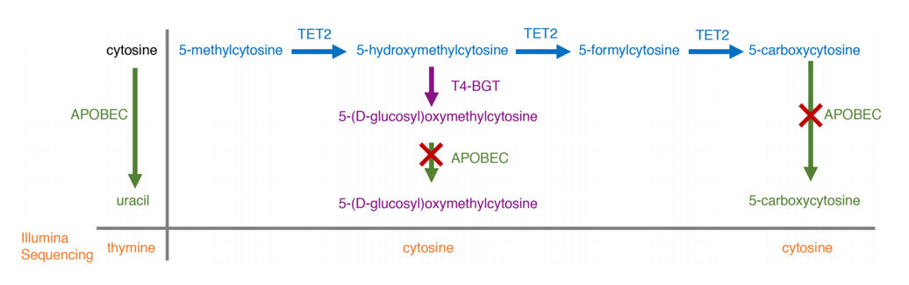
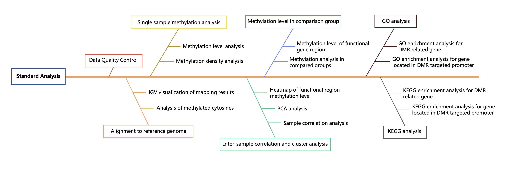
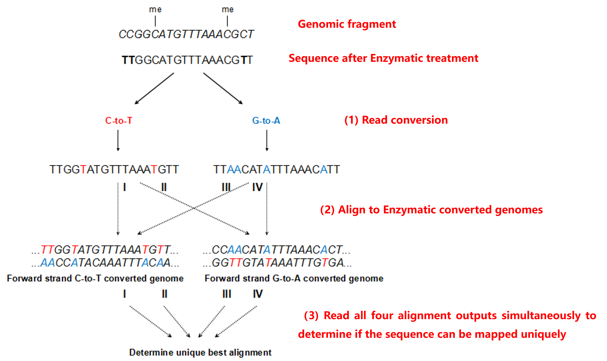
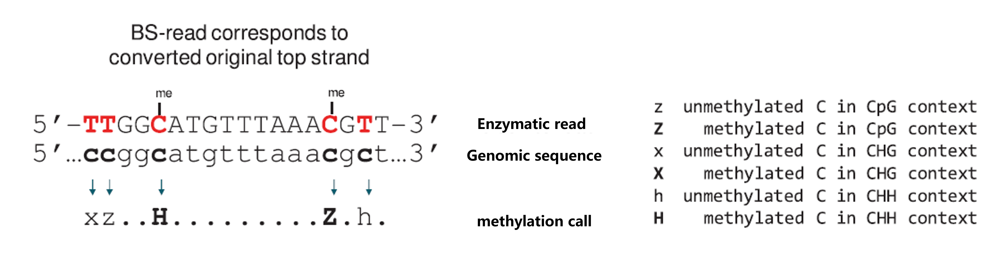
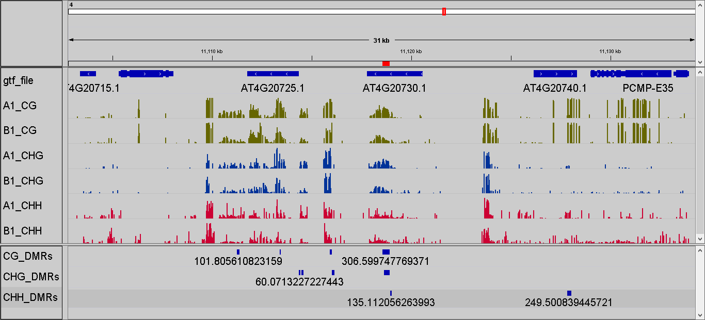
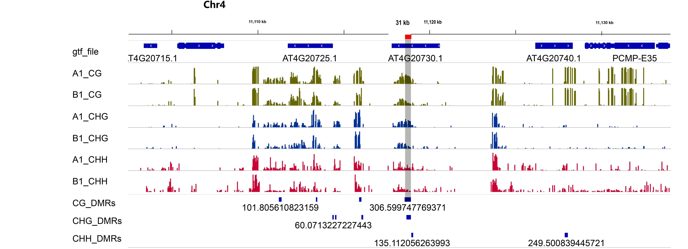

EM-seq (Enzymatic Methylation Sequencing) Bioinformatics Analysis Report
| Contract ID | XXXXXX-ZXX-JXX |
| Contract Name | EMseq_demo report |
| Batch ID | XXXXXX-ZXX-JXX-B1-7 |
| Report Time | 2025-11-13 |
| Customer Service Number | 400-658-1585 |
| Customer Service Email | op-rna@novogene.com |
1. Introduction
DNA methylation is an epigenetic modification in which a methyl group is covalently added to the 5th carbon of the cytosine ring, primarily at CpG dinucleotides, by the enzymatic activity of DNA methyltransferases (DNMTs), resulting in the formation of 5-methylcytosine. Extensive studies have shown that DNA methylation can modulate chromatin structure, alter DNA conformation and stability, and influence DNA–protein interactions, thereby regulating gene expression as a key mechanism of epigenetic control.
EM-seq (Enzymatic Methylation Sequencing) employs mild enzyme-based conversion, requiring lower DNA input than conventional methods while preserving longer fragments for higher-quality NGS libraries. This reliable detection method is applicable to both genomic DNA and cfDNA/ctDNA samples, offering a cost-effective solution for methylation analysis in research.
2. Library Construction, Quality Control and Sequencing
From the DNA samples to final data generation, each step – including sample quality assessment, library preparation, and sequencing – may impacts both data quantity and quality, which in turn directly impacts the bioinformatics analysis results. Therefore, acquiring high-quality data is the prerequisite for ensuring accurate, comprehensive and reliable analysis results. To ensure data accuracy and reliability, Novogene implements strict quality control at every step - sample testing, library preparation, and sequencing - ensuring high-quality data output.
2.1. Sample Quality Control
The library was checked with Qubit for quantification of DNA concentration and with Agilent 2100 for DNA integrity and fragment size distribution.
2.2 Library Construction
Enzyme-based methylation conversion: TET2 and oxidation enhancers are used to protect modified cytosine from deamination in downstream processes. TET2 and oxidation enhancers oxidize 5mC and 5hmC to 5caC and 5gmC. Then, the deaminase APOBEC is used to deaminate cytosine (without affecting 5caC and 5gmC), converting unmethylated C to U. The conversion can be illustrated as follows:

Figure 1. EM-seq Schematic Diagram[1]
2.3 Library Quality Control
The libraries were assessed using AATI for DNA integrity and insert size distribution, and by real-time PCR to determine the effective library concentration. Quantified libraries were then pooled in proportions based on their validated concentrations and the desired sequencing depth, followed by preparation for sequencing.
2.4 Sequencing
Following library quality control, qualified libraries are pooled based on their effective concentrations and the required sequencing depth for high-throughput sequencing on the Illumina platform. The process utilizes Sequencing by Synthesis (SBS) technology, in which libraries are loaded onto a flow cell where DNA fragments are immobilized and clonally amplified into clusters via bridge amplification. During sequencing, four fluorescently labeled reversible terminator nucleotides, along with DNA polymerase and primers, are added. As each complementary base is incorporated, a unique fluorescence signal is emitted and captured by the sequencer. These signals are then processed by base-calling software to generate sequence reads corresponding to the original DNA fragments.
3. Bioinformatics Analysis Pipeline
After obtaining the raw sequencing reads, bioinformatics analysis is carried out through the following process:

Figure 2. Bioinformatic analysis workflow (Figure in Chinese)
4. Analysis Results
4.1 Data Quality Control
4.1.1 Raw Data
The raw image data generated by high-throughput sequencing platforms (e.g., Illumina) are processed by base-calling software - such as Illumina’s CASAVA - to generate nucleotide sequences. These sequences, known as raw data or raw reads, are stored in FASTQ format, which contains both the read sequences and their corresponding base quality scores. Each read is represented by four lines, described in detail as follows:
@HWI-ST1276:71:C1162ACXX:1:1101:1208:2458 1:N:0:CGATGT
NAAGAACACGTTCGGTCACCTCAGCACACTTGTGAATGTCATGGGATCCAT
+
#55???BBBBB?BA@DEEFFCFFHHFFCFFHHHHHHHFAE0ECFFD/AEHH
| Identifier | Meaning |
|---|---|
| HWI-ST1276 | Instrument – unique identifier of the sequencer |
| 71 | Run number – Run number on instrument |
| C1162ACXX | Flowcell ID - ID of flowcell |
| 1 | LaneNumber - positive integer |
| 1101 | TileNumber - positive integer |
| 1208 | X - x coordinate of the spot. Integer which can be negative |
| 2458 | Y - y coordinate of the spot. Integer which can be negative |
| 1 | ReadNumber - 1 for single reads, 1 or 2 for paired ends |
| N | whether it is filtered - NB: Y if the read is filtered out, not in the delivered fastq files, otherwise N |
| 0 | Control number - 0 when none of the control bits are on. Otherwise it is an even number |
| CGATGT | Illumina index sequences |
Line 1 begins with a '@' character and is followed by the Illumina Sequence Identifiers and an optional description.
Line 2 is the raw sequence read.
Line 3 begins with a '+' character and is optionally followed by the same sequence identifiers and descriptions as in Line 1.
Line 4 encodes the quality values for the sequence in Line 2 and must contain the same number of characters as the bases in the sequence.
Sequencing process itself has the possibility of machine errors. Sequencing error rate distribution can reflect the quality of sequencing data. The quality value of each base in sequence information is stored in the FASTQ file. Quality value of the read represented by Qphred and the “e” represents the sequence error rate, Qphred=-10log10(e). The relationship between sequencing error rate (e) and sequencing base quality value (Qphred) is as following(Base Quality and Phred score relationship with the Illumina CASAVA v1.8 software).
| Phred Score | Error Rate | Correct Rate | Q-score |
|---|---|---|---|
| 10 | 1/10 | 90% | Q10 |
| 20 | 1/100 | 99% | Q20 |
| 30 | 1/1000 | 99.9% | Q30 |
| 40 | 1/10000 | 99.99% | Q40 |
(1) Due to the gradual consumption of reagents during sequencing, the sequencing error rate increases with the length of reads, which is a common feature of the Illumina high-throughput sequencing platform.
(2) For the normal methylation library, the sequencing of read1 and read2 will exhibit a directional characteristic: T content is higher in read 1, and A content is higher in read 2.
4.1.2 FastQC of Raw_Reads
The large volume of raw data generated by high-throughput sequencing must undergo quality assessment to ensure suitability for downstream bioinformatics analysis. FastQC is commonly used to generate a quality control (QC) report that evaluates various aspects of raw read quality. At Novogene, FastQC is used to summarize the quality metrics of the raw reads:
Figure 3. raw reads of FastQC
Note:
(1) Top-left: horizontal axis represents position in read (bp), vertical axis represents quality scores. Different colors represent different quality range;
(2) Top-middle: horizontal axis represents position in read (bp), vertical axis represents base percentage;
(3) Top-right: the distribution of read length;
(4) Bottom-left: GC distribution over all sequences. Red line is the actual GC content distribution, blue line is the theoretical distribution;
(5) Bottom-middle: N-ratio across all bases;
(6) Bottom-right: x-axis is the sequence duplication level. y-axis is the percent of the deduplicated reads.
4.1.3 Trimming of Raw Data
To obtain the qualified clean data, we trim the raw reads to filter out the contaminated adapter sequence and low-quality reads. Fastp is used for data trimming and the selection of trimming steps and their associated parameters are shown in the follows:
(1) Adapter and other illumina-specific sequences from the read are trimmed;
(2) Bases at the start and end of each read are trimmed if their quality falls below a threshold of Q3 or if they contain ambiguous bases (N);
(3) A four-base sliding window is applied; trimming occurs when the average quality within the window drops below Q15;
(4) The minimum read length to be kept is specified as 36 nt;
(5) Unpaired reads resulting from trimming are removed;
(6) Cut 10 bases of the start of a read for single cell methylation and low initial methylation libraries.
Table 1.1 Raw Data Summary
| LibraryID | Sample name | Raw_reads | Raw_bases(G) | Clean_reads | Clean_bases(G) | Clean_ratio(%) | Q20(%) | Q30(%) | GC(%) | Conversion rate(%) |
|---|---|---|---|---|---|---|---|---|---|---|
| Case_1 | Case_1 | 54871299 | 16.46 | 53277963 | 14.74 | 89.55 | 99.47 | 97.22 | 23.44 | 99.618 |
| Case_2 | Case_2 | 49958056 | 14.99 | 48615081 | 13.44 | 89.66 | 99.45 | 97.10 | 23.26 | 99.587 |
| Case_3 | Case_3 | 52851879 | 15.86 | 51181079 | 14.16 | 89.28 | 99.47 | 97.24 | 23.30 | 99.637 |
| Control_1 | Control_1 | 53266809 | 15.98 | 51545997 | 14.26 | 89.24 | 99.44 | 97.04 | 23.24 | 99.616 |
| Control_2 | Control_2 | 51441500 | 15.43 | 49965087 | 13.82 | 89.57 | 99.46 | 97.19 | 23.55 | 99.621 |
| Control_3 | Control_3 | 49696639 | 14.91 | 48276209 | 13.36 | 89.60 | 99.47 | 97.23 | 23.56 | 99.615 |
(1) LibraryID: name of library
(2) Sample name: sample name
(3) Raw Reads: the read counts of raw data
(4) Raw Bases(G): read counts of raw data multiplied by read length, saved in G unit
(5) Clean reads: the sequencing read counts after trimming filtering
(6) Clean bases(G): clean read counts multiplied by read length, saved in G unit
(7) Clean ratio(%): the proportion of clean bases in raw bases
(8) Clean_Q20(%): the proportion of bases with quality score more than 20
(9) Clean_Q30(%): the proportion of bases with quality score more than 20
(10) GC Content(%): the proportion of G and C in all the bases
(11) Conversion rate(%)：the enzymatic conversion rate for C converting to T
*Q refers to the quality score. Quality score of each base is calculated as: Q = -10×log10(P), where P is the error rate. For example, when P = 1%, Q = -10×log10(0.01) = 20. Thus, Q20 indicates a 1% error rate, while Q30 indicates a 0.1% error rate.
4.1.4 FastQC of Clean data
FastQC is also performed on the clean data obtained from trimming, the results are as shown:
Figure 4. Clean_reads of FastQC
Note:
(1) Top-left: horizontal axis represents position in read (bp), vertical axis represents quality scores. Different colors represent different quality range;
(2) Top-middle: horizontal axis represents position in read (bp), vertical axis represents base percentage;
(3) Top-right: the distribution of read length;
(4) Bottom-left: GC distribution over all sequences. Red line is the actual GC content distribution, blue line is the theoretical distribution;
(5) Bottom-middle: N-ratio across all bases;
(6) Bottom-right: x-axis is the sequence duplication level. y-axis is the percent of the deduplicated reads.
4.2 Alignment to reference genome
Bismark software is used to align bisulfite-treated sequencing reads to a reference genome [2]. To account for the effects of bisulfite treatment—which converts unmethylated cytosines (C) to uracils (read as thymines, T) during PCR—Bismark performs in silico conversions on both the reads and the reference genome to ensure accurate alignment.
The alignment process includes the following steps:
(1) In silico conversion: Cytosines (C) in the reads and reference genome are converted to thymines (T), and guanines (G) are converted to adenines (A) on the reverse complement strand. This generates four different versions of the genome (CT/GA strands) to handle all methylation contexts.
Read alignment: The converted sequencing reads are aligned to the similarly converted versions of the reference genome using Bowtie2 (invoked by Bismark).
Best match selection: Among the four parallel alignment attempts (one for each strand/orientation), Bismark selects the best unique alignment for each read and reports it as the final mapping result.

Figure 5. Bismark Alignment Strategy
Note: Genomic fragment: shown in italics; Sequence after bisulfite treatment: shown in Roman letters
4.2.1 Overview of Mapping Status
The summary of mapping result as follows:
Table 2.1. Overview of mapping status
| Samples | Total reads | Mapped reads | Mapping rate(%) | Unique Mapping rate(%) | Duplication rate(%) |
|---|---|---|---|---|---|
| Case_1 | 53277963 | 43592029 | 81.82 | 68.90 | 23.22 |
| Case_2 | 48615081 | 33641636 | 82.56 | 69.20 | 23.55 |
| Case_3 | 51181079 | 35427542 | 81.71 | 69.22 | 26.35 |
| Control_1 | 51545997 | 25948254 | 64.74 | 50.34 | 23.55 |
| Control_2 | 49965087 | 25137435 | 65.49 | 50.31 | 23.42 |
| Control_3 | 48276209 | 24369830 | 65.58 | 50.48 | 23.54 |
(1) Samples: Sample name
(2) Total reads: The filtered clean reads used for mapping
(3) Mapped reads: The uniquely mapped reads
(4) Mapping rate (%): The percentage of uniquely mapped reads in the filtered clean reads used for mapping
(5) Duplication rate (%): The percentage of duplication reads in the filtered clean reads used for mapping
4.2.2 Read Coverage
To accurately determine genome-wide DNA methylation status, the NIH Roadmap Epigenomics Project recommends a minimum sequencing depth of 30× coverage per sample (http://www.roadmapepigenomics.org/protocols). However, biological replicates have a greater influence on the reliability of methylation analysis than sequencing depth alone. Therefore, when biological replicates are included, a minimum of 20× coverage per replicate is generally sufficient. In addition to genome-wide coverage, cytosine coverage—the number of times each cytosine is sequenced—is an important metric for assessing the accuracy and confidence of methylation calls. Both genome coverage and cytosine coverage are summarized below:
4.2.2.1 Distribution of genome coverage
Single-base read coverage (the total read amount which covers this specified base) of the genome is calculated to get the genome coverage distribution and cumulative genome coverage distribution of read coverage.
Table 2.2. genome coverage summary
| Samples | Sites_num | Sites_covgMean | Sites_numCovg1(%) | Sites_numCovg5(%) | Sites_numCovg10(%) |
|---|---|---|---|---|---|
| Case_1 | 327441105 | 21.86 | 91.29 | 87.28 | 79.26 |
| Case_2 | 327153120 | 19.94 | 91.21 | 86.63 | 77.18 |
| Case_3 | 327301978 | 20.24 | 91.26 | 86.31 | 76.84 |
| Control_1 | 295280241 | 15.39 | 82.33 | 70.71 | 59.86 |
| Control_2 | 295014808 | 14.93 | 82.25 | 70.85 | 59.93 |
| Control_3 | 295609600 | 14.45 | 82.42 | 70.62 | 59.21 |
(1) Samples: sample name
(2) sites_num: the total detected genome base amount
(3) sites_covgMean: the average base coverage of the genome
(4) sites_numCovg1: the percentage of bases with a minimum 1x coverage of the genome
(5) sites_numCovg5: the percentage of bases with a minimum 5x coverage of the genome
(6) sites_numCovg10: the percentage of bases with a minimum 10x coverage of the genome
Figure 6. Distribution of genome coverage of all samples
Note:Top: x-axis shows the coverage depth, y-axis shows the fraction of bases with the corresponding coverage depth in the genome. Bottom: x-axis shows the coverage depth, y-axis shows the accumulative fraction of bases above corresponding depth in the genome. Different colors denote different samples.
4.2.3 Coverage depth of cytosine sites
The coverage depth of Cytosine is a standard for sequencing depth. The coverage of Cytosine in each CX context is calculated (the read amount supporting the context) to get the accumulative coverage distribution diagrams. The coverage depth of each CX context (CpG, CHH, CHG, H represents A, C, T) is shown as follows.
Table 2.3 The coverage statistics of cytosine in different context
| Sample | C_covgMean | C(Mb) | CG(Mb) | CHG(Mb) | CHH(Mb) | MeanC(%) | MeanCG(%) | MeanCHG(%) | MeanCHH(%) |
|---|---|---|---|---|---|---|---|---|---|
| Case_1 | 8.7 | 1337.7 | 198.8 | 220.0 | 918.9 | 13.66 | 49.89 | 18.97 | 4.55 |
| Case_2 | 7.9 | 1213.7 | 179.9 | 199.0 | 834.9 | 13.40 | 49.36 | 18.70 | 4.39 |
| Case_3 | 8.2 | 1259.4 | 183.9 | 204.7 | 870.8 | 13.75 | 50.95 | 19.18 | 4.62 |
| Control_1 | 6.2 | 963.3 | 138.6 | 159.6 | 665.1 | 11.56 | 43.23 | 16.87 | 3.68 |
| Control_2 | 6.0 | 926.2 | 137.2 | 155.8 | 633.1 | 11.44 | 42.65 | 16.74 | 3.37 |
| Control_3 | 5.8 | 888.2 | 131.9 | 148.9 | 607.4 | 11.81 | 43.99 | 17.41 | 3.46 |
(1)sample: sample name
(2) C_covgMean: The mean coverage of all the cytosine sites
(3) C(Mb): The base number mapped onto the genome cytosine sites
(4) CG(Mb): The base number mapped onto the genome CG-context cytosine sites
(5) CHG(Mb): The base number mapped onto the genome CHG-context cytosine sites
(6) CHH(Mb): The base number mapped onto the genome CHH-context cytosine sites
(7) MeanC: The average methylation level of all the genome cytosine sites
(8) MeanCG: The average methylation level of all the genome CG-context cytosine sites
(9) MeanCHG: The average methylation level of all the genome CHG-context cytosine sites
(10) MeanCHH: The average methylation level of all the genome CHH-context cytosine sites
Figure 7. The accumulative coverage distribution of cytosines in each context
Note: The x-axis shows the coverage depth of Cytosine sites, y-axis shows the accumulative fraction of cytosine sites above corresponding coverage depth. Different colors denote different contexts.
4.3 Identification of Methylated Cytosines
After the alignment, site calling, and evaluation of genomic coverage/depth and C site coverage/depth of methylation data, C-site analysis of methylation is processed as follows:
4.3.1. Detection of methylated sites
After alignment, Bismark is used to identify methylated sites. First, PCR duplicates must be removed [2]. Then, the methylation state of cytosines is determined by comparing the base in the read with the corresponding base in the reference genome. If the base in the read is a C, it indicates that the cytosine is methylated; if it is a T, the cytosine is considered unmethylated. The algorithm used by Bismark to identify methylation sites operates as follows:

The PE reads overlap portion may cause some bias in the mC site identification results[3]，Hence, we select “no_overlap” in “bismark_methylation_extractor”, and remain read1 information when dealing with PE reads overlap area[2,4]。
Besides, the bisulfite conversion rate may also influence the accuracy of methylation identification. By adding Lambda genome DNA in the library as the negative control, we calculated the BS conversion rate to evaluate the reliability of the methylation level. In next generation sequencing, the sequencing depth of each site is different, which cause the different ratio of methylated and unmethylated sites. However, the probability of each methylated site should be subjected to the binomial distribution. Binomial distribution is the discrete probability distribution of the number of successes in a sequence of independent experiments, is a widely used probability distribution of discrete random variables. In analysis process, in order to identify the true methylated sites, methylated and unmethylated counts at each site from Bismark output is tested by binomial distribution. Assuming that the number of methylated cytosines observed at a given site is x, with a total read coverage of n, and a bisulfite non-conversion rate of p, the reliability of the observed methylation must be evaluated under these conditions. Specifically, it is necessary to test whether the observed x methylated reads can be explained by incomplete bisulfite conversion alone, or if they provide statistically significant evidence of true methylation. A set of thresholds are set in analysis process to find accurate methylated sites[5-6]：(1) the sequencing depth is greater than or equal to five; (2) q-value less than or equal to 0.01[7]。
For the methylated sites, the methylation level is calculated using the following formula: ML=mC/(mC+umC). ML represents the methylation level, and mC and umC represent the number of methylated and unmethylated cytosines, respectively. The results of methylation level of cytosine are shown in follows:
Table 3.1 Methylation Level of Cytosines
| Chromosome | Position | Strand | Methylation Level | mC count | umC count | Pvalue | Corrected pvalue | Context |
|---|---|---|---|---|---|---|---|---|
| Unchr13 | 4237 | + | 0.103 | 3 | 26 | 1.7025e-04 | 1.8300e-04 | CG |
| Unchr13 | 4245 | + | 0.065 | 2 | 29 | 5.8830e-03 | 6.2156e-03 | CG |
| Unchr13 | 4262 | + | 0.056 | 2 | 34 | 7.8741e-03 | 8.3191e-03 | CG |
| Unchr13 | 78168 | + | 0.800 | 4 | 1 | 9.1978e-10 | 1.0393e-09 | CG |
| Unchr13 | 78188 | + | 0.800 | 4 | 1 | 9.1978e-10 | 1.0393e-09 | CG |
| Unchr13 | 78220 | + | 1.000 | 5 | 0 | 6.7998e-13 | 8.2249e-13 | CG |
(1) Chromosome: chromosome ID
(2) Position: cytosine coordinate at genome
(3) Strand: strand information of the cytosine
(4) Methylation level: ML=mC/(mC+umC)
(5) mC count: the number of methylated cytosines
(6) umC count: the number of unmethylated cytosines
(7) Pvalue: p value of binomial distribution test
(8) Corrected pvalue: adjusted p value
(9) Context: contexts in which the cytosine is located
4.3.2 Summary of Genomic Methylation Profile
The percentages of methylated cytosines in different sequence contexts (CpG, CHG, and CHH) are summarized in the table below.
Table 3.2. Summary of Genomic Methylation Profile
| Samples | mC percent(%) | mCpG percent(%) | mCHG percent(%) | mCHH percent(%) |
|---|---|---|---|---|
| Case_1 | 14.21% | 32.99% | 20.73% | 7.1% |
| Case_2 | 13.04% | 30.86% | 19.07% | 6.33% |
| Case_3 | 13.6% | 31.46% | 19.66% | 6.86% |
| Control_1 | 8.65% | 20.45% | 12.78% | 4.18% |
| Control_2 | 8.27% | 20.46% | 12.58% | 3.63% |
| Control_3 | 8.22% | 20.46% | 12.54% | 3.57% |
(1) Samples: sample name
(2) mC percent(%): percent of methylated cytosines in all of the genomic cytosines
(3) mCpG percent(%): percent of methylated cytosines in CG regions
(4) mCHG percent(%): percent of methylated cytosines in CHG regions
(5) mCHH percent(%): percent of methylated cytosines in CHH regions
The percentage of methylated cytosines in each sequence context (CpG, CHG, and CHH), as well as the overall methylation levels, are shown in the following diagrams:
Figure 8. Classification of methylated cytosines
Note: Different color represent methylated cytosines in different contexts, the area represents the percentage of methylated cytosines in the corresponding context.
The percentage of methylated cytosines in each sequence context (CpG, CHG, and CHH), as well as the total number of methylated cytosines per chromosome, was calculated, and the results are presented as follows:
Figure 9. Distribution of Average Methylation Level in Chromosomes
Note: The x-axis represents the chromosomes ID, and the y-axis represents the average methylation level in corresponding chromosomes. Different colour stand for different contexts.
4.3.3 Methylation analysis of C sites
For each identified methylated site, the methylation level (ML) is calculated as: ML=mC/(mC+umC), where mC represents the number of methylated reads and umC the number of unmethylated reads at the site. The distribution of methylation levels across each sequence context (CpG, CHG, and CHH) is shown below.
Figure 10. Distribution of methylation levels across different sequence contexts
Note: The x-axis represents the methylation level, and the y-axis indicates the percentage of methylated sites within all identified sites. Different colors denote different sequence contexts (CpG, CHG, and CHH). Methylation levels are binned as follows: levels < 5% are counted as 0%; levels between 5% and 15% are counted as 10%; and so on, with levels > 95% counted as 100%.
4.3.4 Visualization of mapping results
The bw format files containing mapping results, corresponding reference genome and gene annotation files are provided. IGV (Integrative Genomics Viewer) software is recommended for visualization of bw file [8]。The advantages of IGV include:
(1) Positions of single or multiple reads in the reference genome, as well as reads distribution in annotated exons, introns or intergenic regions in adjustable scale;
(2) Reads abundance in different regions to surrogate the methylation level of different regions in adjustable scale;
(3) Annotation information of both genes and splicing isoforms and other related annotation information;
(4) Annotation downloaded from remote server or imported from local machines or both.

Figure 11. IGV Visualization

Figure 12. The IGV visualization can be saved as SVG format and edited using AI
4.4. Methylation analysis
Methylation analysis for a single sample includes the following components: overall methylation density, methylation density across chromosomes, methylation distribution in functional genomic regions, and methylation distribution within 2 kb upstream/downstream of genes as well as within gene bodies. These analyses can be used to construct a methylation profile for the species. The results are as follows:
4.4.1 Single sample Methylation analysis
The whole genome is divided into 10 kb bins. For each sample (or for each group, where samples are combined if the number of biological replicates exceeds five), we analyze cytosine sites in each sequence context (CpG, CHG, and CHH). The results are shown below.：
Figure 13. Methylation level distribution across the whole genome
Note: The x-axis represents each sample or group, while the y-axis indicates the methylation level. The genome is divided into 10 kb bins, and methylation levels are calculated for each bin. The width of each violin plot corresponds to the number of bins at a given methylation level, illustrating the distribution across the genome.
The whole genome is divided into 10 kb bins. We analyse the methylation density of cytosine sites in each sequence context for each sample (or for each group, where samples are combined if there are more than five biological replicates). The results are presented below.
Figure 14. Methylation density distribution across the whole genome
Note: The x-axis represents each sample or group, and the y-axis shows the methylation density. The genome is divided into 10 kb bins, and methylation density is calculated for each bin. The width of each violin plot corresponds to the number of bins at a given methylation density, illustrating the distribution of methylation density across the genome.
4.4.2 Circos plots for methylation density
The circus plot is used to map genomic data onto a circular coordinate system, enabling a clear visualization of the distribution of methylation density across chromosomes for different samples [9-10]. An example is shown in Figure 15 below.
Figure 15. Circos plots for methylation density on chromosome
Note: Circos plot represents (from outside to inside):1. The heatmap for methylation density in CG context 2. The heatmap for methylation density in CHG context 3. The heatmap for methylation density in CHH context 4. The heatmap for TE (repeat elements) rate 5. The heatmap for gene density
4.4.3 Circos plots for methylation level density
The maximum and minimum methylation densities in each bin and sequence context are calculated. For plotting, the maximum methylation density within each context is normalized to 100%, and all other values are expressed as a percentage relative to this maximum, consistent with the approach used in previous studies[7,10]
Table 4.1 The max/min methylation density in each bin
| Samples | CG_level_max | CG_level_min | CG_density_max | CG_density_min | CHG_level_max | CHG_level_min | CHG_density_max | CHG_density_min | CHH_level_max | CHH_level_min | CHH_density_max | CHH_density_min |
|---|---|---|---|---|---|---|---|---|---|---|---|---|
| Case_1 | 93.9 | 21.81 | 99.96 | 23.64 | 76.46 | 4.56 | 96.21 | 7.9 | 7.09 | 2.37 | 14.54 | 2.43 |
| Case_2 | 93.75 | 21.66 | 99.93 | 23.32 | 76.56 | 4.32 | 96.29 | 7.56 | 6.85 | 2.17 | 13.79 | 2.13 |
| Case_3 | 93.97 | 24.08 | 99.93 | 25.63 | 76.69 | 4.69 | 96.21 | 8.22 | 7.19 | 2.28 | 14.62 | 2.42 |
| Control_1 | 91.65 | 14.42 | 99.28 | 15.91 | 78.85 | 2.64 | 96.87 | 4.34 | 6.21 | 1.68 | 12.49 | 3.05 |
| Control_2 | 91.47 | 13.88 | 99.21 | 15.28 | 77.98 | 2.55 | 96.67 | 4.26 | 5.59 | 1.6 | 11.01 | 2.68 |
| Control_3 | 91.38 | 14.52 | 99.21 | 16.34 | 77.91 | 2.68 | 96.79 | 4.49 | 5.78 | 1.74 | 11.12 | 3.17 |
(1) Samples: sample name
(2) CG_level_max：max value of methylation level in each bin in CG context
(3) CG_level_min：min value of methylation level in each bin in CG context
(4) CG_density_max：max value of methylation density in each bin in CG context
(5) CG_density_min：min value of methylation density in each bin in CG context
(6) CHG_level_max: max value of methylation level in each bin in CHG context
(7) CHG_level_min: min value of methylation level in each bin in CHG context
(8) CHG_density_max：max value of methylation density in each bin in CHG context
(9) CHG_density_min：min value of methylation density in each bin in CHG context
(10) CHH_level_max：max value of methylation level in each bin in CHH context
(11) CHH_level_min：min value of methylation level in each bin in CHH context
(12) CHH_density_max：max value of methylation density in each bin in CHH context
(13) CHH_density_min：min value of methylation density in each bin in CHH context
The methylation level distribution on chromosomes is presented using a Circos plot, as shown in Figure 16:
Figure 16. Circos plots depicting methylation level and density
Note: The Circos plot displays the following tracks from the outermost to the innermost ring: Line chart of methylation levels, with colors representing sequence contexts (red for CpG, blue for CHG, purple for CHH). Heatmap showing gene density across the genome. Line chart of methylation density, with the same color scheme as the methylation levels (red for CpG, blue for CHG, purple for CHH).
4.4.4 Methylation Level of Genomic Features
The average methylation level in different cytosine contexts was calculated across various genomic functional regions, including promoters, exons, introns, CpG islands (CGIs), CGI shores, and repeat elements. The promoter region is defined as the 2 kb upstream of the transcription start site (TSS). Typically, CGI and CGI shore regions in mammals are predicted using cpgIslandExt, while repeat elements are identified using RepeatMasker based on the species or closely related species. The distribution of average methylation levels across these genomic regions for each sample is shown below.
Figure 17. Methylation level distribution of all samples in genomic features
Note: The x-axis represents different genomic elements, and the y-axis represents methylation level. The various functional areas of each gene are divided into 20 bins, and average methylation level within each bin region is calculated. Different colour stand for different contexts (CpG, CHG, CHH).
4.4.5 Methylation Level of up/downstream
The methylation levels from 2 kb upstream to 2 kb downstream of each gene, as well as across the gene body (from the transcription start site [TSS] to the transcription end site [TES]) for each cytosine context, were summarized. The distribution of methylation levels from TSS to TES is shown below.
Figure 18. Methylation levels from 2 kb upstream to 2 kb downstream of genes
Note: The x-axis represents consecutive bins spanning the 2 kb upstream region, the gene body, and the 2 kb downstream region. The y-axis shows the methylation level. Colors indicate different sequence contexts: CpG, CHG, and CHH.
4.5. Correlation and cluster heatmap
To ensure the reproducibility of results, it is important to include biological replicates in experimental design. The NIH Roadmap Epigenomics Project recommends using two or more biological replicates in methylation studies. Biological replication serves two main purposes: first, to demonstrate that the biological experiments are reproducible and show low variability; and second, to increase the reliability of differential genetic or epigenetic analyses.
4.5.1 Correlation and PCA analysis
Correlation and principal component analysis (PCA) are conducted to assess the reproducibility of the analytical results. Correlation analysis is performed when there are more than two samples, while PCA is conducted when the sample size exceeds six. (PCA results are not displayed if the number of samples is fewer than six.)
4.5.1.1 Correlation analysis
The correlation of methylation levels between samples is a key metric for assessing the reliability of the experiment and the appropriateness of sample selection. A correlation coefficient closer to 1 indicates a higher similarity in methylation patterns between samples. To perform this analysis, the whole genome is divided into 2 kb bins. Methylation levels are calculated for each bin, and Pearson correlation analysis is conducted to evaluate the relationships between samples[11]：
Figure 19.1. Correlation analysis of methylation levels between samples
Note: Heatmap shows the pairwise correlation between samples. R2 the squared Pearson correlation coefficient, calculated separately for each sequence context (CpG, CHG, and CHH).
4.5.1.2 Inter-sample PCA analysis
Principal Component Analysis (PCA) is a statistical method that transforms a set of potentially correlated variables into a set of linearly uncorrelated variables through orthogonal transformation. The transformed variables are referred to as principal components. In practical research, to comprehensively analyze a problem, numerous related variables (or factors) are often considered, as each variable reflects certain aspects of the issue to varying degrees.
The core idea of PCA is to reduce the dimensionality of the data while preserving as much of its variance as possible, thereby extracting fewer uncorrelated variables to describe the dataset. Conceptually, a dataset can be imagined as a group of points in a multidimensional space. By rotating the coordinate system (where the axes represent the principal components) while maintaining the relative spatial positions of the points, the projections of the points onto the new axes are maximized in terms of variance. The axis with the largest projection variance is the first principal component (PC1), followed by the second principal component (PC2).
PCA was performed using correlation-analyzed data, and the results are as follows:
Figure 19.2 PCA results of inter-sample methylation patterns. (Analysis was conducted separately for CG, CHG, and CHH contexts.)
Note: Presented here are the Manhattan distance plots and the scatter plots of the first and second principal components for each sequence context (CG, CHG, CHH). Detailed results and high-quality PDF figures are available in the results files.
4.5.2 Heatmap analysis of functional regions
The heatmap analysis of methylation levels in functional genomic regions provides insight into the consistency of methylation patterns across samples within these regions. It reflects the degree of agreement in methylation level distributions among samples in functionally relevant areas of the genome. The data for this analysis are derived from the "Methylation Level of Genomic Features" results for individual samples.
Figure 20. Heatmap analysis of methylation levels in gene functional regions across different samples and sequence contexts
4.6 Methylation level in comparison group
In most studies, the primary focus is on differential methylation analysis between samples or groups. Comparative methylation analysis includes the following components: overall methylation density, methylation density across chromosomes, methylation distribution in functional genomic regions, and methylation patterns within 2 kb upstream/downstream of genes as well as across gene bodies. If biological replicates are available, their data are combined to improve reliability and statistical power[12]。
4.6.1 Circos plot for differential methylation level
Circos plots can visually highlight differences in combined methylation levels between comparison groups (Figure 4.22) [10,13]
Figure 21. Circos plot of combined methylation levels between comparison groups
Note: The Circos plot displays methylation patterns from outer to inner rings as follows: 1. Methylation levels for sample or group 1, where color intensity represents the methylation level. 2. Heatmap showing the methylation level differences between groups. 3. Methylation levels for sample or group 2, with color indicating the corresponding methylation levels.
4.6.2 Methylation level of functional gene region
The methylation level in different cytosine contexts (CpG, CHG, and CHH) is calculated across various functional genomic regions, including promoters, exons, introns, repeat elements, CpG islands (CGIs), and CGI shores. The promoter region is defined as the 2 kb region upstream of the transcription start site (TSS), while 5' UTRs, exons, and introns are annotated based on Ensembl gene structure files. The average methylation level distribution across these functional regions for the comparison groups is shown below.
Figure 22. Overview of methylation level distribution across functional genomic elements in three sequence contexts (CpG, CHG, and CHH)
Note: The x-axis represents different functional genomic elements (e.g., promoters, exons, introns, repeats, CGIs, and CGI shores), and the y-axis shows methylation levels. For each comparison group (after merging biological replicates, if available), each functional region is divided into 20 bins, and methylation levels are calculated per bin. Colors indicate different groups, while line styles represent different cytosine contexts. Due to the substantial differences between CG and non-CG (CHG and CHH) methylation in most species, two y-axis labels are used: the left axis corresponds to non-CG contexts, and the right axis corresponds to the CG context.
Figure 23. methylation level distribution at functional genetic elements in each context (CG, CHG, CHH)
Note: The x-axis represents functional genomic elements, and the y-axis indicates the methylation level. For each group (with biological replicates combined, if available), each functional region is divided into 20 bins, and the methylation level is calculated for each bin. Colors represent different comparison groups.
4.6.3 Methylation level of up/downstream 2kb and gene body.
We analyze methylation levels from 2 kb upstream to 2 kb downstream of genes, as well as across the gene body (from the transcription start site [TSS] to the transcription end site [TES]) for each cytosine context (CpG, CHG, and CHH) in each comparison group. The distribution of methylation levels across these regions and contexts is presented below.
Figure 24. Overview of methylation level distribution across 2 kb upstream, gene body, and 2 kb downstream regions in three sequence contexts (CpG, CHG, and CHH)
Note: The x-axis represents functional genomic regions, and the y-axis shows methylation levels. After combining samples with biological replicates (if available), each region is divided into 50 bins, with methylation levels calculated for each bin. Different colors indicate different groups, while line styles represent different sequence contexts (CpG, CHG, and CHH). Due to significant differences between CG and non-CG contexts in most species, two y-axis labels are used: the left for non-CG contexts (CHG and CHH) and the right for the CG context.
Figure 25. Overview of methylation level distribution across upstream 2 kb, gene body, and downstream 2 kb regions in each sequence context (CpG, CHG, and CHH)
Note: The x-axis represents functional genomic regions (2 kb upstream, gene body, and 2 kb downstream), and the y-axis indicates the methylation level. For each group (with biological replicates combined, if available), each region is divided into 50 bins, and methylation levels are calculated for each bin. Colors represent different comparison groups.
4.7 Differentially methylated regions analysis
DNA methylation status can vary across different genomes, such as those from distinct tissues, cell types, or individuals. Differentially methylated regions (DMRs) may be involved in the transcriptional regulation of genes and are key to understanding epigenetic variation between biological conditions. Identifying DMRs enables the investigation of epigenetic differences across tissues, developmental stages, or disease states. It is well established that DNA methylation plays a crucial role in processes such as cell differentiation and proliferation. Numerous DMRs have been identified during embryonic reprogramming (reprogramming-associated DMRs, or R-DMRs) and across developmental stages (developmental DMRs, or D-DMRs) [14-16]. In cancer, global hypomethylation is commonly observed alongside focal hypermethylation, particularly in CpG islands within promoter regions of tumor suppressor genes, when compared to normal tissue[17].
4.7.1 DMR analysis
In this pipeline, DSS-single (DSS) is used to identify differentially methylated regions (DMRs). To account for the spatial correlation between CpG sites, a smoothing approach is applied during the analysis [18-20]，Several key factors are considered in the DSS analysis:
(1) 1.Spatial correlation of methylation sites: Incorporating information from neighboring CpG sites enhances the estimation of methylation levels at individual sites and improves the detection of DMRs. DSS employs smoothing techniques to identify broader, spatially consistent DMRs.
(2) 2.Read depth at methylation sites: Higher sequencing depth at CpG sites increases the accuracy and statistical power of DMR detection.
(3) 3.Variance among biological replicates: Accounting for variability across biological replicates is essential to avoid false positives. DSS models methylation data using a beta-binomial distribution, which effectively captures overdispersion and heterogeneity across replicates. In the absence of replicates, DSS uses information from nearby CpG sites as pseudo-replicates through its smoothing algorithm (for detailed pipeline settings and parameters, refer to the README.txt file in the results directory and relevant references).
The results of DMR analysis using DSS are presented below:
Table 7.1 DMR analysis results
| Chr | Start | End | DMR_length | C_number | Group1_meanMethy | Group2_meanMethy | Diff.Methy | AreaStat | C_context |
|---|---|---|---|---|---|---|---|---|---|
| chr1 | 16599 | 17164 | 566 | 157 | 0.117264194303098 | 0.0230448546278459 | 0.0942193396752521 | 1125.00663219382 | CHH |
| chr1 | 16671 | 16991 | 321 | 30 | 0.91717772283483 | 0.14456213953231 | 0.77261558330252 | 720.993412883842 | CG |
| chr1 | 21399 | 22357 | 959 | 80 | 0.793271737967246 | 0.174841168731435 | 0.618430569235811 | 1840.37824171835 | CG |
| chr1 | 42519 | 43330 | 812 | 284 | 0.0727239019136963 | 0.011075425921568 | 0.0616484759921282 | 1930.55308274583 | CHH |
(1) chr: chromosome ID
(2) start: start position of DMR
(3) end: end position of DMR
(4) DMR_length: length of DMR
(5) C_number: number of sites inside DMR
(6) group1_meanMethy: average methylation level in case group
(7) group2_meanMethy: average methylation level in control group
(8) diff.Methy: difference of methylation level between two groups
(9) areaStat: statistical value to perform the feneral difference between two group
(10) C_context: sequence context
*DMR.all.result.xls: all DMR identified by DSS software. If the number of DMR in all contexts is higher than 10000, then top 10000 DMR are selected for further analysis.
4.7.2 DMR results annotation
For DMRs, regional annotations were applied (e.g., promoter, exon, intron, CGI, CGI shore, repeat, TSS, TES, etc.); additionally, information was added for gene regions associated with gene names. The results are as follows:
Table 7.2 DMR annotation
| Chr | Start | End | DMR_length | C_number | Group1_meanMethy | Group2_meanMethy | Diff.Methy | AreaStat | C_context | RegionID | Region | Gene name | Gene description |
|---|---|---|---|---|---|---|---|---|---|---|---|---|---|
| chr1 | 66932 | 67390 | 459 | 45 | 0.885194277708144 | 0.110823574000151 | 0.774370703707993 | 1457.68914936009 | CG | OL1g11580 | promoter | OL1g11580 | - && - && PF07889:Protein of unknown function (DUF1664) |
| chr1 | 66996 | 67715 | 720 | 33 | 0.572263304361376 | 0.0626944280878853 | 0.509568876273491 | 425.621608081748 | CHG | OL1g11580 | promoter | OL1g11580 | - && - && PF07889:Protein of unknown function (DUF1664) |
| chr1 | 67690 | 68000 | 311 | 104 | 0.28894677613113 | 0.0281912674512615 | 0.260755508679869 | 1360.0785352718 | CHH | OL1g11580 | promoter | OL1g11580 | - && - && PF07889:Protein of unknown function (DUF1664) |
| chr1 | 91205 | 91748 | 544 | 59 | 0.878095537835801 | 0.141960857020305 | 0.736134680815496 | 1798.91257514143 | CG | OL1g14717 | promoter | OL1g14717 | - && - && PF00076:RNA recognition motif. (a.k.a. RRM, RBD, or RNP domain)|PF00630:Filamin/ABP280 repeat |
| chr1 | 91345 | 91833 | 489 | 37 | 0.738977869977268 | 0.13075425838652 | 0.608223611590748 | 519.217666220078 | CHG | OL1g14717 | promoter | OL1g14717 | - && - && PF00076:RNA recognition motif. (a.k.a. RRM, RBD, or RNP domain)|PF00630:Filamin/ABP280 repeat |
(1) chr: chromosome ID
(2) start: start position of DMR
(3) end: end position of DMR
(4) DMR_length: length of DMR
(5) C_number: number of sites inside DMR
(6) group1_meanMethy: average methylation level in case group
(7) group2_neanMethy: average methylation level in control group
(8) diff.Methy: difference of methylation level between two groups
(9) areaStat: statistical value to perform the feneral difference between two groups
(10) C_context: sequence context
(11) regionID: region ID(could be gene ID，repeat ID，CGI position)
(12) region: region context
(13) Gene name: gene name or related description if gene ID related region
(14) Gene description: gene description
Venn plots are constructed for DMR target gene (from TSS to TES) in three contexts (CG, CHG, CHH).
Figure 26. Venn plot for DMR target gene in three contexts (CG, CHG, CHH)
Note: The icons indicate the comparison groups and the types of gene-annotated regions. The numbers in the figure represent the counts of intersecting or unique gene sets, and the result file will include specific gene lists.
4.7.3 Violin plot for DMR methylation level
Regarding DMR methylation levels, the DSS software provides the average methylation level of differentially methylated regions, which is used to generate violin-boxplots depicting the distribution of methylation levels in three contexts (CG, CHG, CHH). The results are as follows:
Figure 27. Violin plot of DMR methylation level in three contexts (CG, CHG, CHH)
Note: The x-axis is the comparison group name, the y-axis is the methylation level.
4.7.4 Cluster heatmap for DMR methylation level
For each identified DMR, DSS provides the average methylation level across the region, which is used to generate heatmaps. These heatmaps visualize methylation patterns and differences across sample groups or comparisons.
Cluster heatmaps of DMR methylation levels in CG, CHG, and CHH contexts:
Figure 28. DMR methylation level cluster heatmap in CG/CHG/CHH context
Note: The x-axis is the comparison group name, the y-axis is the methylation level and cluster results.
4.7.5 The distribution of Hyper/Hypo DMR methylation level
For DMR target regions (such as promoters, exons, introns, CpG islands (CGIs), CGI shores, repetitive elements, transcription start sites (TSS), and transcription end sites (TES)) -we provide comparative statistics between hypermethylated (high methylation) and hypomethylated (low methylation) DMRs.
DMR distribution plots across CG, CHG, and CHH contexts:
Figure 29. DMR distribution plot in CG/CHG/CHH context across different functional regions
Note: The x-axis is functional regions, the y-axis is number of hyper/hypo DMR in each region.
4.7.6 Circos plot for DMR significance
The genomic distribution and statistical significance of DMRs are visualized using a Circos diagram[10]。
Following statistical testing, each DMR is assigned an areaStat value, which reflects the magnitude and direction of methylation change, serving as an indicator of statistical significance for that region.These following plots provide insight into context-specific methylation dynamics and their genomic localization.
Figure 30. Circos plot of DMR condition in three contexts (CG, CHG, CHH)
Note: The Circos plot visualizes the distribution and statistical significance of differentially methylated regions (DMRs) across the genome. The plot is structured from outermost to innermost rings as follows:
(1) Hypermethylated DMRs — represented by scatter points showing the statistical value of each DMR, calculated as log₅(|areaStat|). Larger and higher-positioned points indicate greater methylation differences between the two groups. Color coding by context (CG: red circle; CHG: blue circle; CHH: purple circle);
(2) Repeat Element Content — shown as a heatmap reflecting the percentage of repetitive elements (TEs) in each genomic region (if repeat annotations are available);
(3) Gene Density — displayed as a heatmap indicating the density of genes across genomic regions;
(4) Hypomethylated DMRs — also shown using log₅(|areaStat|) values, with the same color scheme as hypermethylated DMRs. Larger and higher points represent greater methylation decreases between groups.Due to potential overlap between results from different methylation contexts (CG, CHG, CHH), this plot should be interpreted with attention to regions where individual contexts show significant changes.
For a more focused analysis, consider comparing with results from single-context mapping.
Figure 31. Circos plot for DMR condition in each context (CG/CHG/CHH)
Note: The circos plot represents (from outside to inside):
(1) Hyper DMR statistical value: log5 (|areaStat|). The higher and bigger the point, the larger differences between two groups. CG context is shown in red circle, CHG context is shown in blue circle, CHH context is shown in purple circle;
(2) TE, the heatmap of percentage of repeat element (if repeats are provided);
(3) heatmap of gene density;
(4) Hypo DMR statistical value: log5 (|areaStat|). The higher and bigger the point, the larger differences between two groups. CG context is shown in red circle, CHG context is shown in blue circle, CHH context is shown in purple circle
4.8 GO enrichment analysis for DMR related gene
Based on the genomic distribution of DMRs, functional enrichment analysis was performed for genes whose gene body regions (from TSS to TES) overlapped with DMRs, categorized by sequence context (CG, CHG, CHH).
Gene Ontology（GO,http://www.geneontology.org/） is an international standard classification system for gene function. Conducting GO enrichment analysis on genes associated with DMR regions helps to identify biological processes relevant to the research focus. The GO enrichment analysis method employed GOseq[21]， which is based on the Wallenius non-central hyper-geometric distribution. This method accounts for the fact that the probability of selecting a gene from a particular category differs from the probability of selecting a gene outside that category. This difference in probability is estimated by considering the bias in gene length, thereby enabling a more accurate calculation of the probability that a GO term is enriched for genes associated with DMRs. The results of the GO enrichment analysis for DMR-related genes are as follows (the result files contain detailed categorizations by sequence context and distinguish between all DMR-anchored genes, hypermethylated DMRs, and hypomethylated DMRs, along with the enrichment analysis results).
Table 8.1 GO enrichment for DMR related gene
| GO accession | Description | Term type | Over represented p-value | Corrected p-value | DMR genes item | DMR genes list |
|---|---|---|---|---|---|---|
| GO:0016705 | oxidoreductase activity, acting on paired donors, with incorporation or reduction of molecular oxygen | molecular_function | 3.6332e-16 | 9.3481e-13 | 64 | 967 |
| GO:0016310 | phosphorylation | biological_process | 1.7614e-14 | 1.9945e-11 | 161 | 967 |
| GO:0006468 | protein phosphorylation | biological_process | 2.7707e-14 | 1.9945e-11 | 155 | 967 |
| GO:0004672 | protein kinase activity | molecular_function | 3.1006e-14 | 1.9945e-11 | 156 | 967 |
| GO:0043531 | ADP binding | molecular_function | 9.6816e-14 | 4.9821e-11 | 63 | 967 |
(1) GO_accession: Gene Ontology entry
(2) Description: Detail description of Gene Ontology
(3) Term_type: GO types,including cellular_component,biological_process,molecular_functio
(4) Over_represented_pValue: P-value in hypergenometric test
(5) Corrected_pValue: GO with Corrected P-value < 0.05 are significantly enriched genes
(6) DMR_gene_item: Number of DMR reference genes with GO anntation
(7) DMR_gene_list: Number of all DMR related genes with GO annotation
The GO enrichment bar plot for DMR-related genes (categorized by sequence context) intuitively reflects the distribution of gene counts across significantly enriched GO terms in Biological Process (BP), Cellular Component (CC), and Molecular Function (MF).
The results are presented as follows (the detailed output files include breakdowns by sequence context and DMR categories - ALL, Hyper-methylated, and Hypo-methylated genes, with enrichment results provided in PDF format).
Figure 32. GO enrichment bar chart
Note: Classification chart for GO enrichment: The y-axis is the enriched GO term, The x-axis is the number of DMR related genes, colors donate three GO term type: biological process, cellular component and molecular function.
The Directed Acyclic Graph (DAG) serves as a graphical representation of the GO enrichment results for DMR-related genes (categorized by sequence context). Its branches represent hierarchical relationships, with terms becoming functionally more specific from top to bottom. Typically, the top 10 most significantly enriched GO terms are selected as primary nodes within the DAG, and related GO terms are displayed through their inclusive relationships. The color intensity of the nodes represents the degree of enrichment significance. In our project, separate DAGs were generated for Biological Process (BP), Molecular Function (MF), and Cellular Component (CC).
Figure 33. Directed Acyclic Graph (DAG)
Note: Each node represents a GO term, with the top 10 most significantly enriched terms highlighted as boxes. Node color intensity correlates with enrichment significance (darker shades indicate higher enrichment). All nodes display the corresponding term name and its enrichment p-value.。
4.9. KEGG enrichment analysis for DMR related gene
Based on the genomic distribution of DMRs, functional enrichment analysis was performed for genes whose gene body regions (from TSS to TES) overlapped with DMRs, categorized by sequence context (CG, CHG, CHH).
Within biological systems, different genes coordinate to carry out their biological functions. Pathway significance enrichment analysis can identify the primary biochemical metabolic pathways and signal transduction pathways in which DMR-related genes are involved. The Kyoto Encyclopedia of Genes and Genomes (KEGG) is a major public database for pathways[22].Pathway significance enrichment analysis uses the KEGG Pathway as a unit and applies the hypergeometric test to identify pathways that are significantly enriched among DMR-related genes compared to the entire genomic background. The formula for the hypergeometric test is:
Where:
- N is the total number of genes (background genes) with pathway annotation information in the entire genome.
- n is the number of DMR-related genes (genes of interest) within the background genes.
- M is the number of genes annotated to a specific KEGG pathway within all background genes.
- k is the number of DMR-related genes annotated to that specific KEGG pathway.
The calculated p-values are typically adjusted for multiple comparisons (e.g., using FDR correction). Pathways satisfying the condition of corrected p-value < 0.05 (or another set threshold) are defined as significantly enriched pathways among the DMR-related genes. The results of the KEGG pathway enrichment analysis are as follows (the result files contain detailed categorizations by sequence context and distinguish between all DMR-anchored genes, hypermethylated DMRs, and hypomethylated DMRs, along with the enrichment analysis results).
Table 9.1 KEGG enrichment results for all DMR related genes
| Term | Database | ID | DMR genes number | Background number | P-value | Corrected p-value |
|---|---|---|---|---|---|---|
| ABC transporters | KEGG PATHWAY | osa02010 | 9 | 26 | 0.000138380363962 | 0.0148066989439 |
| Biosynthesis of secondary metabolites - unclassified | KEGG PATHWAY | osa00999 | 4 | 15 | 0.0224406226411 | 0.716461771052 |
| Sesquiterpenoid and triterpenoid biosynthesis | KEGG PATHWAY | osa00909 | 3 | 8 | 0.0232506191934 | 0.716461771052 |
| Linoleic acid metabolism | KEGG PATHWAY | osa00591 | 4 | 16 | 0.0267836176094 | 0.716461771052 |
| Cutin, suberine and wax biosynthesis | KEGG PATHWAY | osa00073 | 5 | 28 | 0.0415208703564 | 0.800482508251 |
(1) Term: The description of KEGG pathways
(2) Database: The database of pathway
(3) ID: KEGG ID in KEGG database
(4) Input number: Number of DMR related genes with pathway annotation
(5) Background number: Number of all reference genes with pathway annotation
(6) P-value: significant value for enrichment analysis
(7) Corrected P-value: adjusted p-value. The function with corrected P-value < 0.05 is regarded as enrichment
The scatter plot is a graphical representation of the results of the KEGG enrichment analysis. In this figure, the degree of KEGG enrichment is measured by the number of genes, the Qvalue, and the number of genes enriched in this pathway. Where Rich factor refers to the ratio of the number of DMR-related genes enriched in the pathway to the number of annotated genes. The larger the Rich factor, the greater the degree of enrichment. Qvalue is the Pvalue after multiple hypothesis test correction. The value of Qvalue is [0,1]. The enrichment will be more significant if the q-value is close to 0.
The most significant enriched 20 pathways are presented in the scatter plot. If there are less than 20 pathways, all the pathways will be presented. In addition, we also provide a web interface that can display DMR-related genes through KEGG's metabolic pathway map. (The result file contains detailed results on different context, distinguishing the DMR anchoring gene ALL/Hyper/Hypo, enrichment mapping pdf format results).
Figure 34. KEGG enrichment plot of DMR related pathway
Note: The x-axis represents the Rich Factor, indicating the ratio of DMR-related genes in a pathway to the total number of genes in that pathway. The y-axis lists the names of the enriched pathways. The size of each point corresponds to the number of DMR-associated genes mapped to that pathway, while the color of the points reflects the range of Q-values, representing the statistical significance of enrichment.
Figure 35. The metabolic pathway map of KEGG
4.10 GO enrichment analysis for gene located in DMR targeted promoter
Gene enrichment analysis was performed on genes overlapping with DMRs within the promoter region, defined here as 2 kb upstream of the transcription start site (TSS), across different sequence contexts (CG, CHG, CHH).
The promoter region is roughly defined here as 2 kb upstream of the TSS. Researchers are encouraged to refine promoter definitions according to their specific experimental designs and research questions.
Table 10.1 GO enrichment for genes related to DMR targeted promoter
| GO accession | Description | Term type | Over represented p-value | Corrected p-value | DMR genes item | DMR genes list |
|---|---|---|---|---|---|---|
| GO:0030246 | carbohydrate binding | molecular_function | 0.00053801 | 1 | 29 | 942 |
| GO:0001871 | pattern binding | molecular_function | 0.0015144 | 1 | 17 | 942 |
| GO:0030247 | polysaccharide binding | molecular_function | 0.0015144 | 1 | 17 | 942 |
| GO:0043531 | ADP binding | molecular_function | 0.0018485 | 1 | 33 | 942 |
| GO:0005786 | signal recognition particle, endoplasmic reticulum targeting | cellular_component | 0.0045289 | 1 | 2 | 942 |
(1) GO_accession: Gene Ontology entry
(2) Description: Detail description of Gene Ontology
(3) Term_type: GO types,including cellular_component,biological_process,molecular_function
(4) Over_represented_pValue: P-value in hypergenometric test
(5) Corrected_pValue: GO with Corrected P-value < 0.05 are significantly enriched genes
(6) DMR_gene_item: Number of DMR reference genes with GO anntation
(7) DMR_gene_list: Number of all DMR related genes with GO annotation
The GO enrichment bar plot for DMR-anchored promoter-related genes (categorized by sequence context) intuitively displays the distribution of gene counts across significantly enriched GO terms in Biological Process (BP), Cellular Component (CC), and Molecular Function (MF).
The results are presented as follows (the detailed result files include breakdowns by sequence context and distinguish between all DMR-anchored genes, hyper-methylated DMRs, and hypo-methylated DMRs, with enrichment results provided in PDF format).
Figure 36. GO enrichment bar chart
Note: Y-axis: Enriched GO terms; X-axis: Number of DMR-related genes associated with each GO term; Colors: Represent the three GO categories — Biological Process, Cellular Component, and Molecular Function
4.11 KEGG Pathway Enrichment Analysis of Genes with Differentially Methylated Promoter Regions ）
KEGG functional enrichment analysis was performed based on the distribution of differentially methylated regions (DMRs) across the genome and their overlap with genes in promoter regions, defined here as 2 kb upstream of the transcription start site (TSS).
Table 11.1 KEGG enrichment list of DMR anchoring promoter region related gene
| Term | Database | ID | DMR genes number | Background number | P-value | Corrected p-value |
|---|---|---|---|---|---|---|
| Ubiquitin mediated proteolysis | KEGG PATHWAY | osa04120 | 19 | 136 | 0.00475850952136 | 0.556745613999 |
| RNA transport | KEGG PATHWAY | osa03013 | 19 | 165 | 0.0265967056062 | 0.934626560616 |
| Protein processing in endoplasmic reticulum | KEGG PATHWAY | osa04141 | 22 | 222 | 0.0654803639988 | 0.934626560616 |
| Protein export | KEGG PATHWAY | osa03060 | 7 | 58 | 0.120710434606 | 0.934626560616 |
| Ribosome | KEGG PATHWAY | osa03010 | 31 | 358 | 0.121260405392 | 0.934626560616 |
(1) Term: The description of KEGG pathways
(2) Database: The database of pathway
(3) ID: KEGG ID in database
(4) DMR genes number: Number of DMR related genes with pathway annotation
(5) Background number: Number of all reference genes with pathway annotation
(6) P-value: statistical significance level
(7) Corrected P-value: adjusted p-value. The function with corrected P-value < 0.05 is regarded as enrichment
The scatter plot is a graphical representation of the results of the KEGG enrichment analysis. In this figure, the degree of KEGG enrichment is measured by the number of genes, the Qvalue, and the number of genes enriched in this pathway. Where Rich factor refers to the ratio of the number of DMR-related genes enriched in the pathway to the number of annotated genes. The larger the Rich factor, the greater the degree of enrichment. Qvalue is the Pvalue after multiple hypothesis test correction. The value of Qvalue is [0,1]. The enrichment will be more significant if the q-value is close to 0.
The most significant enriched 20 pathways are presented in the scatter plot. If there are less than 20 pathways, all the pathways will be presented. In addition, we also provide a web interface that can display DMR-related genes through KEGG's metabolic pathway map. (The result file contains detailed results on different context, distinguishing the DMR anchoring gene ALL/Hyper/Hypo, enrichment mapping pdf format results).
Figure 37. KEGG enrichment plot of DMR related pathway
Note: The x-axis represents Rich factor, and the y-axis represents pathway name. The size of points stand for DMRs related genes counts and the colours stand for different Q-values range.
5.Appendix
5.1 Basic Concepts
cfDNA (Circulating free DNA), also referred to as cell-free DNA, is extracellular DNA present in the bloodstream. Under normal physiological conditions, cfDNA primarily originates from the degradation of genomic DNA released by senescent or apoptotic cells. However, in pathological states—such as malignancies, trauma, or organ transplant rejection—abnormal cell death leads to the release of large amounts of DNA into circulation. In specific populations (e.g., cancer patients, pregnant individuals, or transplant recipients), a fraction of cfDNA may derive from "foreign" cellular sources (e.g., tumor cells, fetal cells, or donor cells) and serve as biomarkers for genetic testing. ctDNA (circulating tumor DNA) methylation can be detected early during tumorigenesis and exhibits high stability, making it a highly valuable biomarker in liquid biopsies for cancer detection.
5.2 Advantages of EM-seq
EM-seq utilizes enzymatic conversion for methylation library preparation, enabling genome-wide DNA methylation profiling. Compared to traditional WGBS, EM-seq offers broader coverage, higher sensitivity, and is particularly suitable for cfDNA methylation studies. Key advantages include:
1.Non-destructive processing yielding high-quality libraries with lower DNA input requirements
2.Superior GC coverage uniformity and higher reproducibility
3.Enhanced precision in methylation detection at transcription start sites (TSS)
4.Increased CpG island detection efficiency with reduced sequencing depth
The enzymatic conversion process is gentler on DNA, minimizing damage and thus preserving DNA integrity more effectively. As a result, the enzymatically converted DNA is more intact, yielding libraries with a higher proportion of longer insert fragments. This ultimately leads to longer sequencing reads and higher alignment rates.
5.3 Key applications
Genomic DNA/cfDNA/ctDNA Methylation Research:
1.Screening and Identification of Biomarkers
2.Methylation Studies in Precious/Clinical Samples
4.Development and Differentiation
5.Early Disease/Cancer Diagnosis, Recurrence Monitoring, and Prognostic Assessment
5.4 Methods
Methods：English-version-EM-seq-Method.pdf
5.5 Common FAQ
FAQ：FAQ-EM-seq.pdf
5.6 Software List
| Analysis | Software(version) | Parameters | Remarks |
|---|---|---|---|
| CGI prediction | cpgIslandExt | UCSC | |
| repeat prediction | RepeatMasker | ||
| Trim | fastp 0.20.0 | --cut_front_window_size=1 --cut_front_mean_quality=3 --cut_tail_window_size=1 --cut_tail_mean_quality=3 --cut_right_window_size=4 --cut_right_mean_quality=15 --length_required=36 --trim_front1=10 --trim_front2=10 | |
| QC | fastqc_v0.11.3 | ||
| Mapping | Bismark(0.16.3) | --score_min L, 0, -0.2, -X 700 --dovetail | bowtie2 (2.2.5) as aligner engine |
| Deduplicate | Bismark(deduplicate_bismark) | --paired --samtools_path | |
| mC calling | Bismark(bismark_methylation_extractor) | --multicore 4 --paired-end --no_overlap -ignore 5 --ignore_r2 5 | |
| DMR analysis | DSS(DSS_2.12.0) | smoothing.span=200，delta=0，p.threshold=1e-05，minlen=50，minCG=3，dis.merge=100，pct.sig=0.5 | smoothing=TRUE,depth ＞1 |
| GO enrichment | Goseq, topGO, Bioconductor(2.13) | corrected p-value<0.05 | |
| KEGG enrichment | KOBAS(3.0) | corrected p-value<0.05 | |
| Circos plot | circos-0.62-1 |
5.7 Instructions for Viewing Result Files
*.csv：Result Data Tables, these files contain tabular result data in comma-separated values format.
- UNIX/Linux/Mac users: View using terminal commands like less or more, or open with spreadsheet applications such as Microsoft Excel or LibreOffice Calc.
- Windows users: Open with Microsoft Excel for structured viewing or Notepad++ for raw text inspection.
*.pdf: Result Images, these files contain vector-based graphics, which means they can be zoomed without losing image quality.
- Ideal for visual inspection, editing, and publication use.
- Can be opened with any standard PDF viewer.
- For editing (e.g., adjusting layout or labels), use software like Adobe Illustrator or Inkscape.
5.8. References
[1] Vaisvila R , Ponnaluri V K C , Sun Z , et al. Enzymatic methyl sequencing detects DNA methylation at single-base resolution from picograms of DNA[J]. Genome Research, 2021.
[2] Krueger, F, Andrews, et al. Bismark: a flexible aligner and methylation caller for Bisulfite-Seq applications[J]. Bioinformatics Oxford, 2011.
[3] Gao S , Zou D , Mao L , et al. SMAP: a streamlined methylation analysis pipeline for bisulfite sequencing[J]. GigaScience, 2015, 4(1):1-9.
[4] Wang L , Zhang J , Duan J L , et al. Programming and Inheritance of Parental DNA Methylomes in Mammals. 2014.
[5] Whole-genome bisulfite sequencing of two distinct interconvertible DNA methylomes of mouse embryonic stem cells.[J]. Cell Stem Cell, 2013, 13(3):360-369.
[6] Casey AG, Michael JZ, Hongcang Gu, et al.Transcriptional and Epigenetic Dynamics during Specification of Human Embryonic Stem Cells. [J].Cell, 153:1149-1163.
[7] Lister R, Pelizzola M, Dowen RH, et al. Human DNA methylomes at base resolution show widespread epigenomic differences. Nature, 462(7271): 315-22.
[8] James T. Robinson, Helga Thorvaldsdóttir, Wendy Winckler,et al. Lander, Gad Getz, Jill P. Mesirov. Integrative Genomics Viewer. Nature Biotechnology 29, 24–26.
[9] Silin Zhong, Zhangjun Fei, Ying Shao & James J Giovannoni ,et al.single-base resolution methylomes of tomato fruit development reveal epigenome modifications associated with ripening. [J].. nature biotechnology.
[10] Krzywinski, M. et al. Circos: an Information Aesthetic for Comparative Genomics. Genome Res 19:1639-1645.
[11] Sébastien A Smallwood, Wolf Reik , Gavin Kelsey et al. (2014) single-cell genome-wide bisulfte sequencing for assessing epigenetic heterogeneity. nature methods.
[12] Qiang Song, Benjamin Decato,Jun Zhou, Andrew D. Smith et al. (2013) A Reference Methylome Database and Analysis Pipeline to Facilitate Integrative and Comparative Epigenomics . PLOS ONE.
[13] Marta Kulis , Simon Heath , Elías Campo , José I Martín-Subero et al. (2012) Epigenomic analysis detects widespread gene-body DNA hypomethylation in chronic lymphocytic leukemia. Nature Genetics.
[14] Reik W, Dean W, Walter J. (2001) Epigenetic reprogramming in mammalian development. Science, 293 (5532):1089–93.
[15] Meissner A, Mikkelsen TS, Gu H, et al. (2008) Genome-scale DNA methylation maps of pluripotent and differentiated cells. Nature, 454 (7205): 766–70.
[16] Doi A; Park IH, Wen B, Murakami P, et al. (2009) Differential methylation of tissue- and cancer-specific CpG island shores distinguishes human induced pluripotent stem cells, embryonic stem cells and fibroblasts. Nature genetics, 41 (12): 1350–3.
[17] Irizarry RA, Ladd-Acosta C, Wen B, et al. (2009) The human colon cancer methylome shows similar hypo- and hypermethylation at conserved tissue-specific CpG island shores. Nature genetics, 41 (2): 178–86.
[18] Hao Feng, Karen N. Conneely, Hao Wu. (2014) A Bayesian hierarchical model to detect differentially methylated loci from single nucleotide resolution sequencing data. Nucleic Acids Research, 2014, Vol. 42, No. 8.
[19] Hao Wu, Tianlei Xu, et al. (2015) Detection of differentially methylated regions from whole-genome bisulfite sequencing data without replicates. Nucleic Acids Research, 2015.
[20] Yongseok Park and Hao Wu .(2016) Differential methylation analysis for BS-seq data under general experimental design. Bioinformatics.
[21] Young MD, Wakefield MJ, Smyth GK, et al. (2010) Gene ontolotf1 analysis for RNA-seq: accounting for selection bias. Genome Biol, 11(2): R14.
[22] Kanehisa M, Araki M, Goto S, et al. (2008). KEGG for linking genomes to life and the environment. Nucleic Acids Res, 36(Database issue): D480-4.
[23] Erlich Y, Mitra P P, Delabastide M, et al.Alta-Cyclic: a self-optimizing base caller for next-generation sequencing.[J].Nature Methods, 2008, 5(8):679-82.
[24] Jiang L, Schlesinger F, Davis C A, et al.Synthetic spike-in standards for RNA-seq experiments[J].Genome Research, 2011, 21(9):1543.